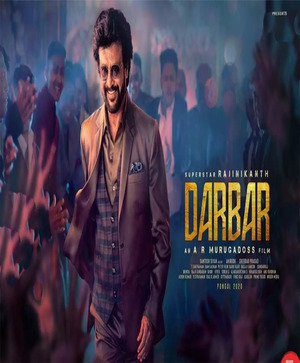
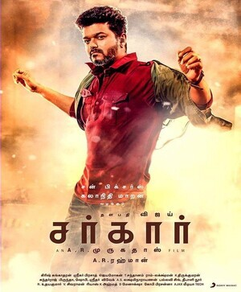
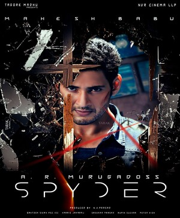
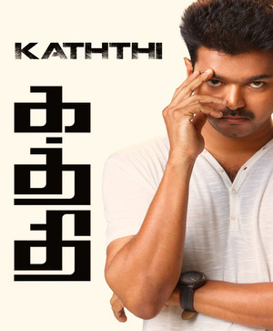

Murugadas Arunachalam (born 25 September 1974), known professionally as AR Murugadas is an Indian film director, screenwriter and film producer who predominantly works in the Tamil film industry. He is best known for directing action films mainly on social issues. In addition, he has worked in Telugu films and Hindi films. Murugadoss won the Filmfare Award for Best Director for his 2014 Tamil action drama Kaththi.
|  |  |  |  |